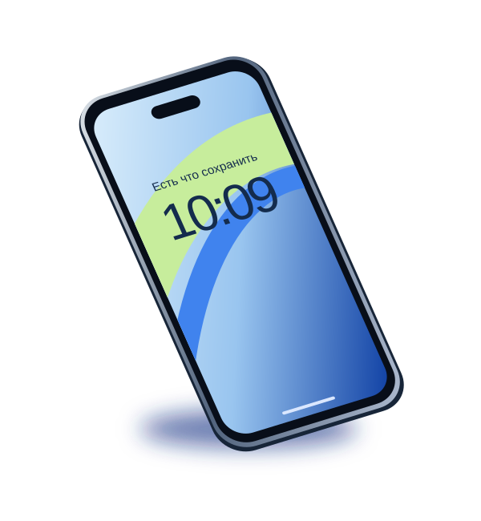

Вы рассказываете
Модель устройства, симптомы и что случилось перед поломкой. Можно начать с сообщения и фотографии.
СЕРВИС ПО РЕМОНТУ ТЕХНИКИ / УЛЬЯНОВСК
Любимый телефон. Рабочий ноутбук. Техника, к которой привыкли. Поможем вернуть её в ваш день.
От смартфона до бытовой техники.
Одна мастерская. Много решений.

01 Дисплей 02 Системная плата 03 АккумуляторВыберите устройство. Расскажем, с какими неисправностями работаем и с чего начать ремонт.
Ещё у нас:
Не нужно знать название детали.
Достаточно описать, что случилось.
Выберите устройство
Что с ним происходит?
Точную причину определяем после проверки устройства.
Поломка всегда некстати. Поэтому важно, чтобы сам ремонт был понятным: что произошло, какие есть варианты и что будет дальше.
Познакомиться в Telegram ↗Модель устройства, симптомы и что случилось перед поломкой. Можно начать с сообщения и фотографии.
Проверяем технику и объясняем причину неисправности. Условия диагностики уточняем при обращении.
Какие работы нужны, сколько они стоят и сколько займут времени. Подбираем вариант для вашего устройства.
После ремонта — проверка результата, рекомендации и информация о гарантии на выполненные работы.
Разъём, который перестал держать зарядку. Аккумулятор, которого не хватает до вечера. Пыль, из-за которой ноутбук перегревается.
Чтобы вернуть привычный комфорт, сначала нужно найти причину. Именно с этого начинается наша работа.
Стоимость зависит от модели, причины поломки и выбранных деталей. Начнём с вашего устройства — так разговор будет предметным.
Уточните стоимость проверки и условия при отказе от ремонта до передачи устройства.
Обсудим состав ремонта, доступные детали и итоговую стоимость для вашей модели.
Срок и условия зависят от выполненной работы. Подробности уточняйте у мастера.
«Адекватные цены, обращаюсь не в первый раз!»
«Хорошие мастера и цены».
«Ремонтируем не первый телефон. Быстро и качественно!!!»
Фрагменты отзывов с сайта ARGEO Service. Полная история оценок и ответы компании — на Яндекс Картах.
Модель устройства и описание проблемы помогут дать предварительный ориентир. Точная причина неисправности и состав работ определяются после проверки. Начните с сообщения в Telegram.
Срок зависит от неисправности, модели и наличия запчастей. Уточните его у мастера для вашего случая. Если устройство нужно к определённой дате, сообщите об этом при обращении.
Условия зависят от устройства и вида проверки. До передачи техники уточните цену диагностики и оплату при отказе от дальнейшего ремонта: +7 995 646-15-50.
Сервис заявляет гарантию до 6 месяцев. Конкретный срок, покрытие и условия зависят от выполненных работ и деталей. Уточните их при согласовании ремонта и сохраните выданные документы.
По возможности сделайте резервную копию важных файлов и выйдите из чувствительных приложений. Сообщите мастеру, если данные особенно важны. Необходимость доступа к устройству обсуждается отдельно.
Выезд заявлен среди услуг сервиса. Возможность, район, стоимость и подходящие категории техники уточняйте по телефону или в Telegram до записи.
Ульяновск,
ул. 12 Сентября, 83
Перед визитом уточните время работы по телефону.